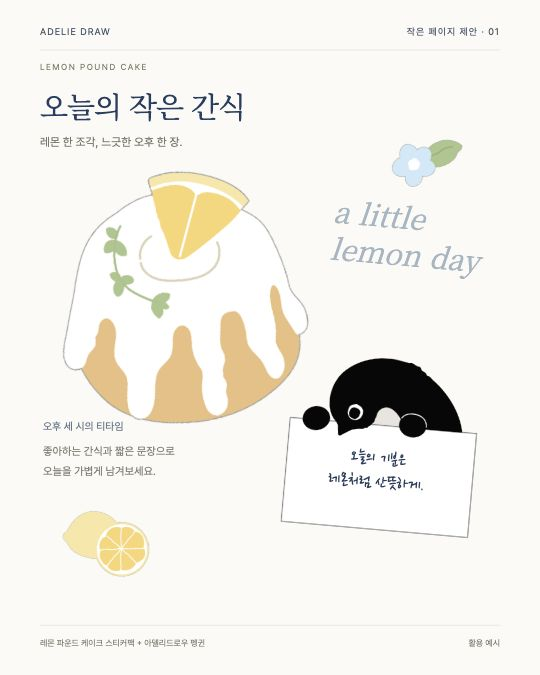
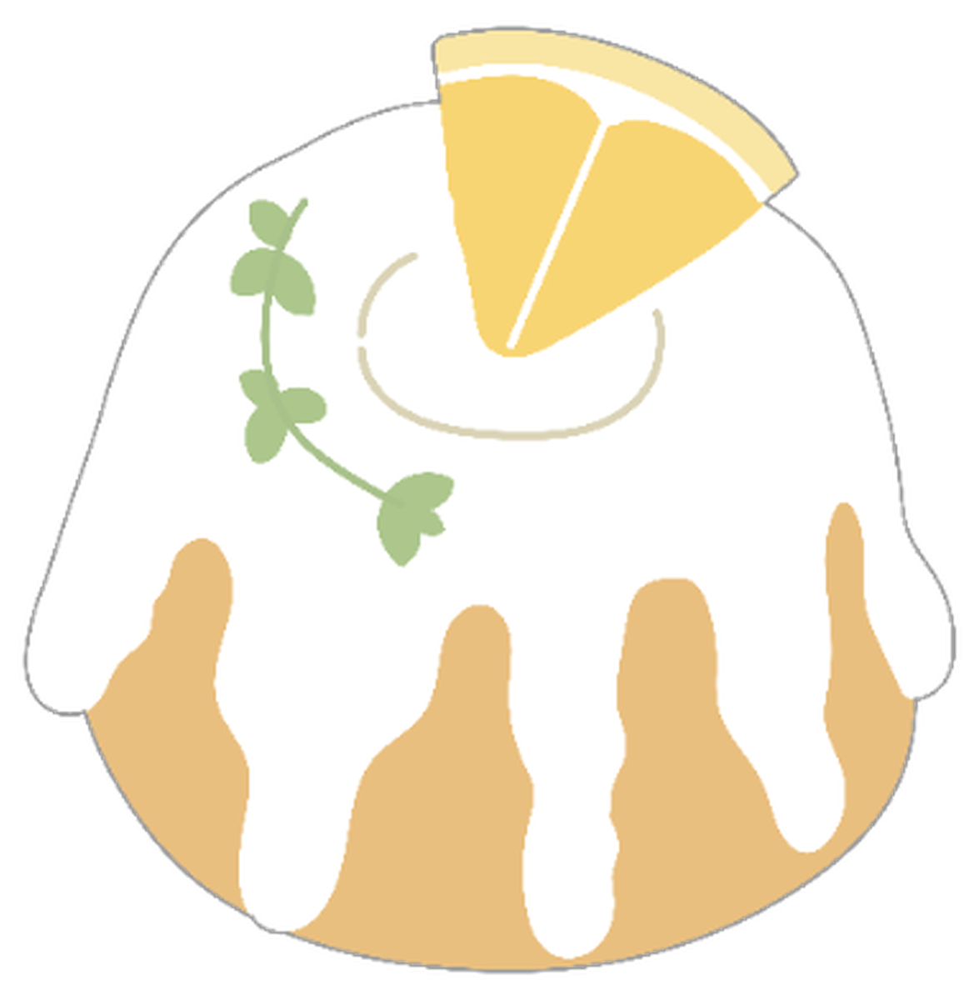
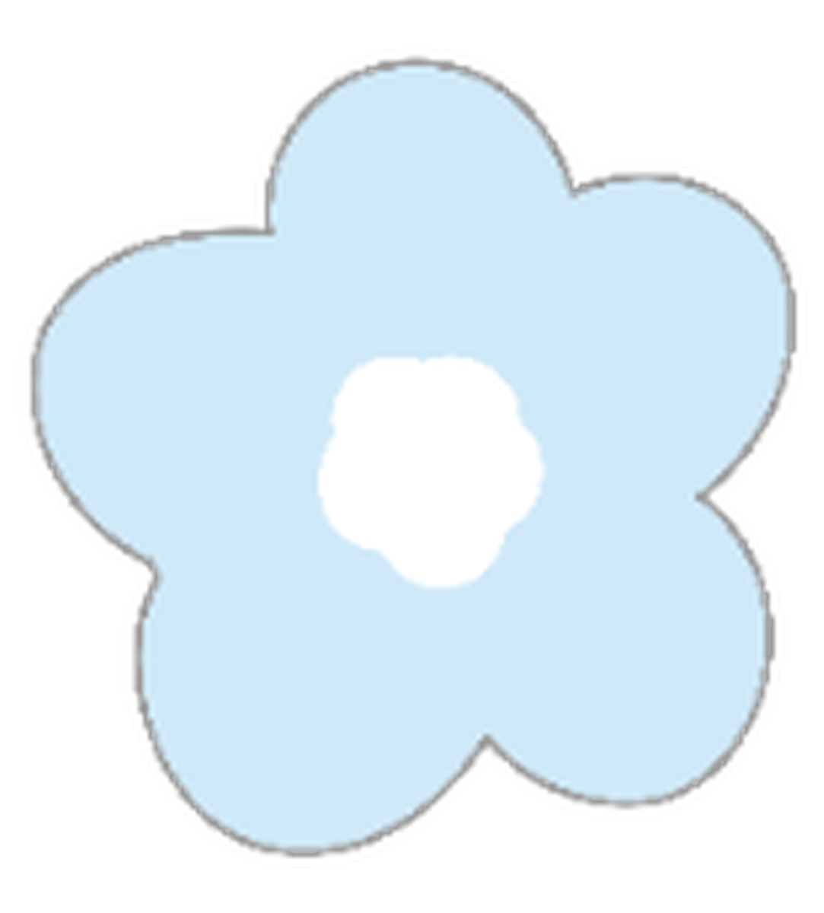
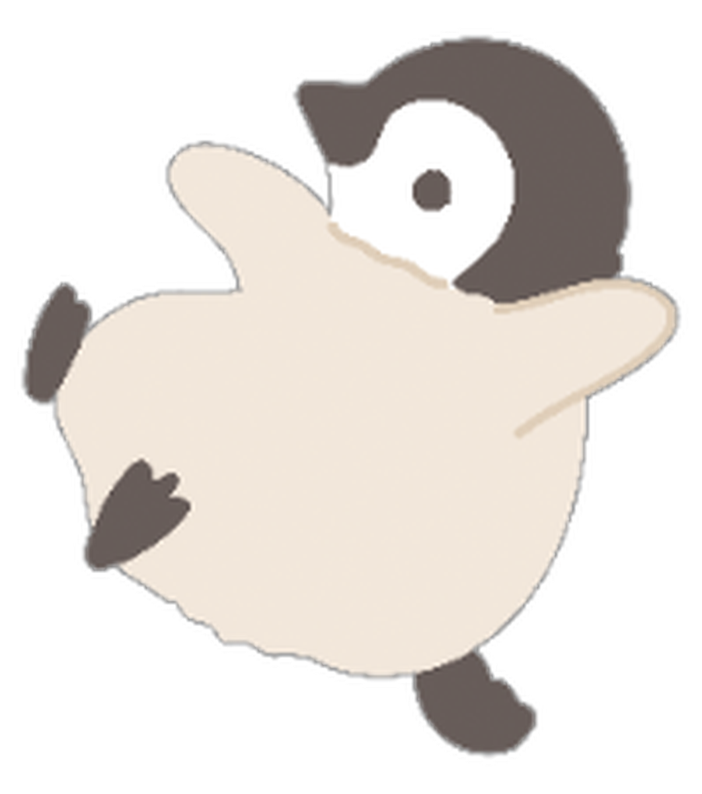
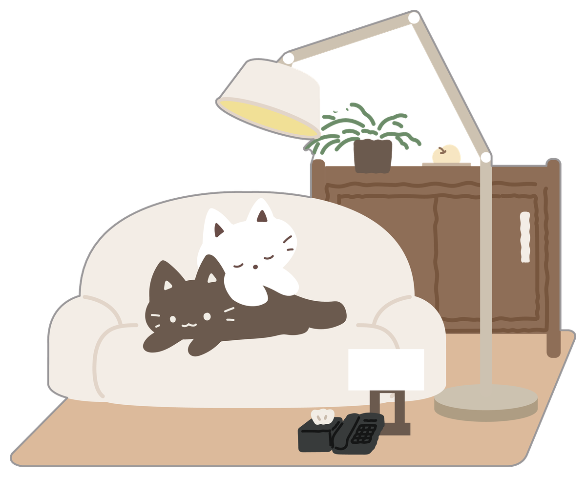
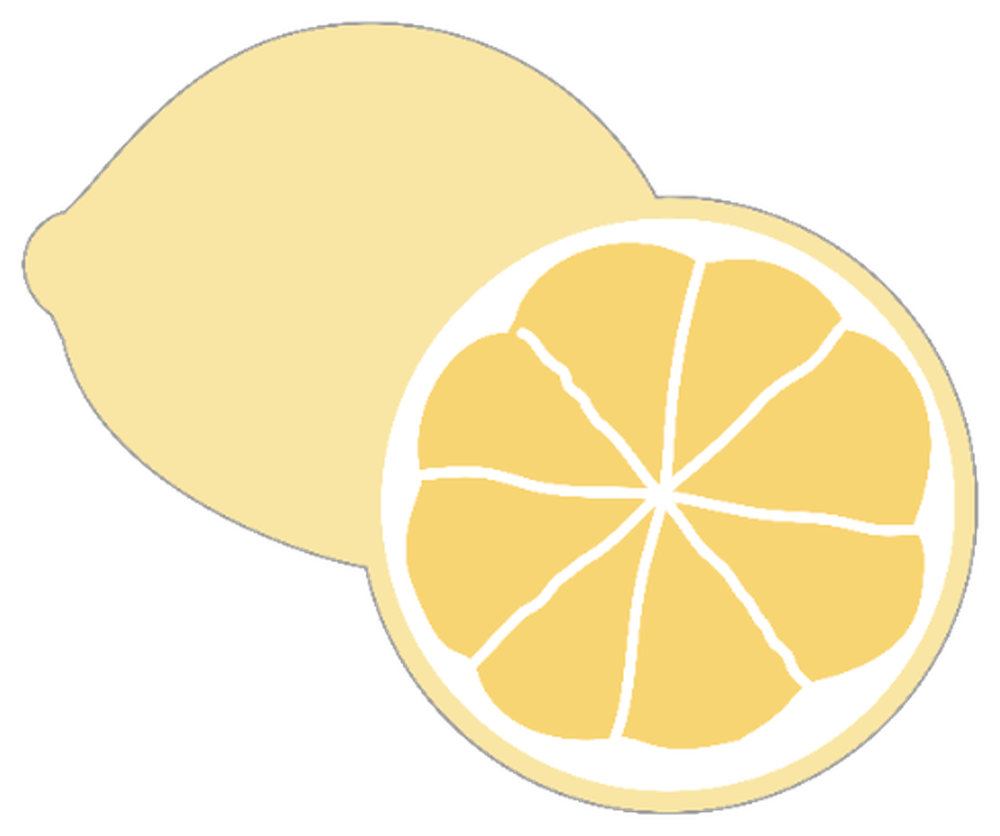
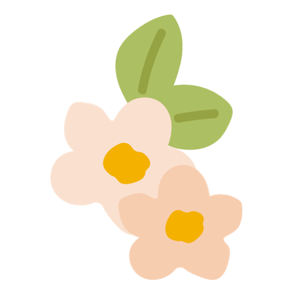
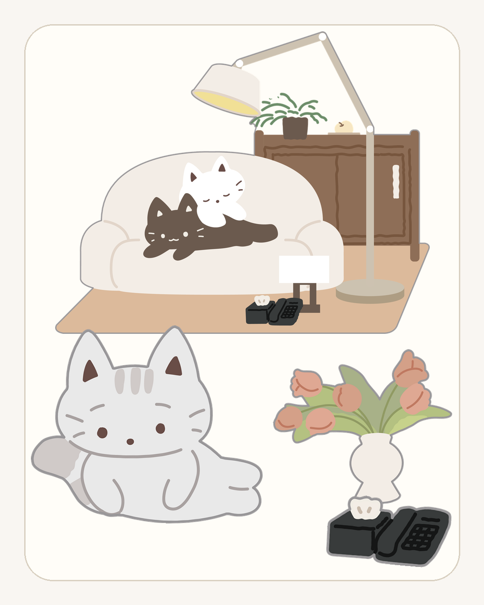
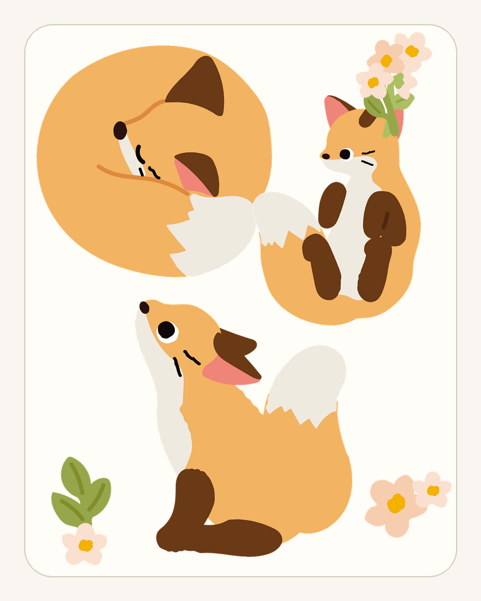

아델리드로우의 문구를 앱에서
스티커팩을 골라
한 장을 꾸밉니다.
종이를 고르고, 사진과 글을 얹고, 스티커를 붙여 페이지를 만듭니다. 저장한 페이지는 다시 열어 이어서 편집하거나 이미지로 내보낼 수 있습니다.
앱 화면 보기오늘은 레몬 파운드 케이크로.






팩을 고르는 화면
먼저, 어떤 팩을
쓸지 봅니다.
Home에서 새 팩을 보고 Studio에서 전체 구성을 둘러봅니다. 마음에 드는 팩을 열면 포함된 스티커와 샘플을 확인한 뒤 바로 만들기로 넘어갑니다.
- Home
- 오늘 만들기와 추천 팩
- Studio
- 팩·종이 전체 보기
- Pack detail
- 구성과 활용 예시 확인



팩을 고른 다음
바로 한 장으로.
페이지 만들기
고른 재료로
바로 한 장.
Create에서 시작 방식을 고르고 Compose에서 종이·사진·스티커·텍스트를 편집합니다.






다시 찾기
만든 페이지는
날짜 속에 남습니다.
저장한 페이지를 날짜와 검색으로 찾고 다시 편집합니다. 여러 장을 골라 공유하거나 이미지로 저장할 수도 있습니다.
현재 페이지·초안·템플릿은 기기 안에 저장됩니다. 클라우드 백업은 아직 제공하지 않습니다.
Lemon Pound Cake
한 팩으로
이런 페이지를 만듭니다.
레몬 파운드 케이크 팩의 실제 스티커와 아델리드로우 펭귄을 배치한 활용 예시입니다. 샘플 이미지는 팩의 쓰임을 보여주며 편집 가능한 완성 템플릿과는 구분합니다.
짧은 문장 하나면 충분한 날.
현재 카탈로그
지금 앱에 들어 있는 팩.
아래 세 팩과 기본 흰 모조지가 현재 빌드에 포함되어 있습니다.



현재 빌드 · 2026.09
지금 되는 것과
아직 없는 것.
현재 동작
Home · Pages · Create · Studio · Library
자동 저장 · 재편집 · 날짜 탐색 · 검색
PNG 저장 · 시스템 공유
한국어 · English · 日本語 · 中文
출시 전 남은 항목
스토어 공개 배포와 정책·지원 페이지
출시 팩 라인업과 실제 구매·복원 검증
클라우드 백업·복원은 미구현